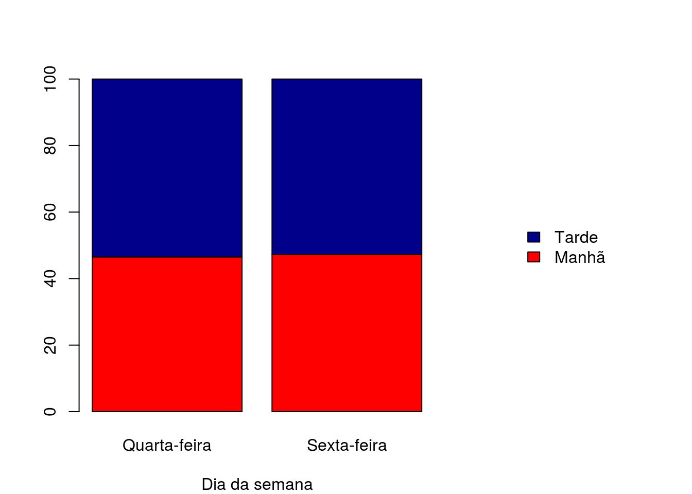
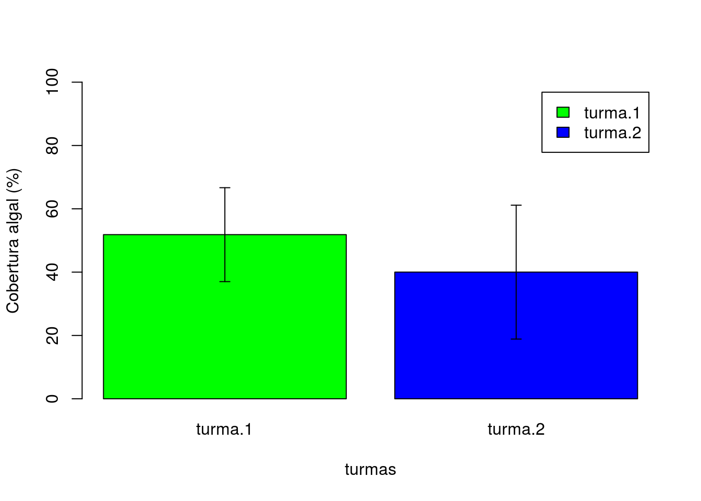

Capítulo 5 Appendix {+}
5.0.1 Capítulo 1
- b
- a
- c
- b
- e
5.0.2 Capítulo 2
- e
- d
- d
- b
- c
5.0.3 Capítulo 3
##
## Chi-squared test for given probabilities
##
## data: observados
## X-squared = 4.188, df = 1, p-value = 0.04071De acordo com o resultado obtido p-value < 0,05, temos que o número decarros observados entre os períodos (manhã e tarde) são diferentes e de acordo com os valores obtidos (550 carros no período da manha e 620 no período da tarde) corroboramos corroboramos a observação do pesquisador que no período da tarde há um maior trafego de carros.
dados <- matrix(data = c(200, 350, 230, 390), ncol = 2, byrow = TRUE)
rownames(dados) <- c("Manhã", "Tarde")
colnames(dados) <- c("Quarta-feira", "Sexta-feira")
dados## Quarta-feira Sexta-feira
## Manhã 200 350
## Tarde 230 390##
## Pearson's Chi-squared test with Yates' continuity correction
##
## data: dados
## X-squared = 0.039543, df = 1, p-value = 0.8424De acordo com o resultado obtido p-value > 0,05, não podemos refutar a hipótese nula (H0: As proporções relativas da circulação de carros na praia por período do dia são independentes dos dias da semana avaliados). Portanto dizemos que a proporção de carros que circulam durante o período do dia é similar em ambos os dias da semana a um nível de confiança de 95%.
## Quarta-feira Sexta-feira
## Manhã 46.51163 47.2973
## Tarde 53.48837 52.7027O erro tipo 1 consiste em rejeitar a hipótese nula quando ela é verdadeira. O erro tipo 2 consiste em aceitar a hipótese nula quando ela é falsa. No exercício 2 o p-value obtido foi de 0,057, o que corrobora a hipótese nula (H0), a um nível de confiança de 95%. Neste caso, como o nível de significância é próximo do limite estabelecido, há o risco de cometer o erro tipo 2.
tabela <- prop.table(x = dados, margin = 2)*100
par(mar = c(4, 4, 4, 13))
barplot(tabela,
xlab = "Dia da semana",
col = c("red", "darkblue"),
legend.text = TRUE,
args.legend = list(x = "right", bty = "n", inset = -0.5))
5.0.4 Capítulo 4
set.seed(45)
algas <- (rnorm(n = 20, sd = 0.1) + runif(n = 20, min = 0, max = 0.8))*100
t.test(x = algas, mu = 52, conf.level = 0.95)##
## One Sample t-test
##
## data: algas
## t = -2.5378, df = 19, p-value = 0.02007
## alternative hypothesis: true mean is not equal to 52
## 95 percent confidence interval:
## 30.11439 49.89807
## sample estimates:
## mean of x
## 40.00623##
## One Sample t-test
##
## data: algas
## t = -2.5378, df = 19, p-value = 0.02007
## alternative hypothesis: true mean is not equal to 52
## 99 percent confidence interval:
## 26.48517 53.52730
## sample estimates:
## mean of x
## 40.00623A depender do nível de confiança podemos ter diferentes conclusões. Se considerarmos um nível de confiança de 95% podemos dizer que a média do percentual de algas obtido pela turma que foi de 40,01% difere da média obtida pela turma anterior que foi de 52% com um p-value de 0,02. Se considerarmos um nível de confiança de 99% podemos dizer que a média do percentual de algas obtido pela turma que foi de 40,01% é similar ao obtido pela turma anterior que foi de 52% com um p-value de 0,02.
O intervalo de confiança para o nível de 95% encontra-se entre: 30,11 e 49,90. O valor de 52% encontra-se fora do intervalo de confiança; O intervalo de confiança para o nível de 99% encontra-se entre: 26,49 e 53,53. O valor de 52% encontra-se dentro do intervalo de confiança;
##
## Shapiro-Wilk normality test
##
## data: algas.duasamostras$cobertura[algas.duasamostras$turmas == "turma.1"]
## W = 0.91597, p-value = 0.08291##
## Shapiro-Wilk normality test
##
## data: algas.duasamostras$cobertura[algas.duasamostras$turmas == "turma.2"]
## W = 0.97976, p-value = 0.9309##
## Bartlett test of homogeneity of variances
##
## data: cobertura by turmas
## Bartlett's K-squared = 2.2754, df = 1, p-value = 0.1314##
## Two Sample t-test
##
## data: cobertura by turmas
## t = 2.0497, df = 38, p-value = 0.04734
## alternative hypothesis: true difference in means is not equal to 0
## 95 percent confidence interval:
## 0.146276 23.522724
## sample estimates:
## mean in group turma.1 mean in group turma.2
## 51.8420 40.0075##
## Two Sample t-test
##
## data: cobertura by turmas
## t = 2.0497, df = 38, p-value = 0.04734
## alternative hypothesis: true difference in means is not equal to 0
## 99 percent confidence interval:
## -3.821193 27.490193
## sample estimates:
## mean in group turma.1 mean in group turma.2
## 51.8420 40.0075Ambas os conjuntos de dados demonstraram normalidade, pelo teste de Shapiro-Wilks, assim como homocedasticidade das variâncias, pelo teste de Bartlett. O teste-t fornece um p-value de 0,04734. Ao considerar o nível de confiança de 95% temos o valor no limiar da rejeição da hipótese nula. Se considerarmos o p-value como <0,05 podemos refutar a hipótese nula e dizer que a cobertura algal obtida pelas duas turmas é diferente. Contudo ao nível de confiança de 99% podemos corroborar a hipótese nula e dizer que a cobertura algal observada por ambas as turmas são similares, embora a média de cobertura obtida pela primeira turma seja 11% menor.
library(Rmisc)
resultado <- summarySE(data = algas.duasamostras,
measurevar = "cobertura",
groupvars = "turmas")
grafico <- barplot(formula = cobertura ~ turmas,
data = resultado,
beside = TRUE,
col = c("green", "blue"),
ylim = c(0, 100),
ylab = "Cobertura algal (%)",
legend.text = TRUE)
arrows(x0 = grafico,
y0 = resultado$cobertura + resultado$sd,
y1 = resultado$cobertura - resultado$sd,
code = 3,
angle = 90,
length = 0.05)
##
## Shapiro-Wilk normality test
##
## data: diferenca
## W = 0.96839, p-value = 0.7206##
## Paired t-test
##
## data: algas.pareado$observador.1 and algas.pareado$observador.2
## t = 0.91619, df = 19, p-value = 0.3711
## alternative hypothesis: true difference in means is not equal to 0
## 95 percent confidence interval:
## -7.052518 18.033518
## sample estimates:
## mean of the differences
## 5.4905##
## Paired t-test
##
## data: algas.pareado$observador.1 and algas.pareado$observador.2
## t = 0.91619, df = 19, p-value = 0.3711
## alternative hypothesis: true difference in means is not equal to 0
## 99 percent confidence interval:
## -11.65443 22.63543
## sample estimates:
## mean of the differences
## 5.4905A diferença entre os observadores mostrou normalidade para o teste de Shapiro-Wilks e independente do nível de confiança adotado (95% ou 99%) a média da diferença foi proxima a 0, indicando similaridade entre as observações. Corroborando, portanto, a hipótese nula (H0), de que não há diferença entre os observadores.